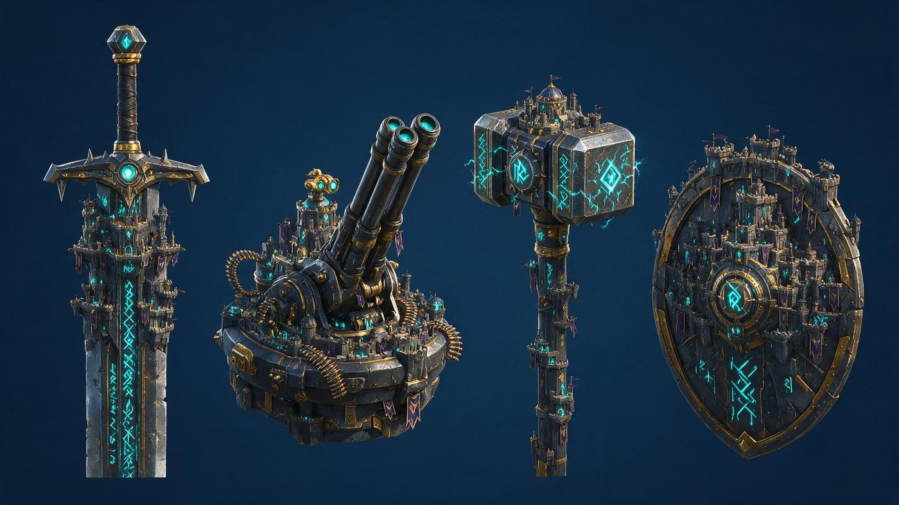
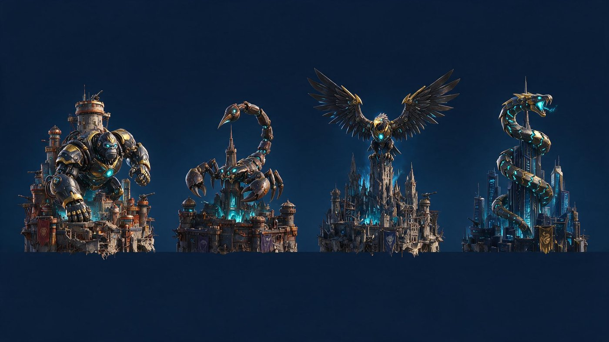

先把两件事纠正过来
① 同品质，没有好坏差别。之前我给城基和本体排了稀有度阶梯（低/中/高/最高），错了。 改成全部同品质、统一出帅出炫——每一款都要能独立撑起一座城，不存在「这款是垫底的」。 这带出三个连锁问题，解法在页尾。
② 别搞传统。上一版的锈铁台 / 装甲基 / 石遗迹 + 工厂 / 星舰 / 高塔，是常规主城语言，不炫。 下面四个方向全部往「非建筑主体」走。
方向 A · 巨型武器你给的方向

→ 要救的话：武器必须是「插在城里」而不是「取代城」——保留可辨识的城体， 武器从城里穿出来，武器上再长栈道和瞭望台（就像下面 C 方向的陨星那样处理）。
方向 B · 机械巨兽我最推荐

方向 C · 天体异象视觉最独特

方向 D · 图腾面具

我的建议：不要选一个方向，四个方向各取一款
你说了「同品质、没好坏差别」——那用什么来区分四款本体？答案是题材，不是稀有度。 四个方向各出最强的那一款，凑成首期 4 款：
这么做有三个好处：① 四款视觉区分度拉到最大（机械兽 / 天体 / 兵器 / 石雕，玩家一眼分得清， 不会觉得「这四个不都差不多」）；② 同品质这件事立得住 —— 四款是四种口味不是四个档次； ③ 首期就把四个方向的市场反应验证掉，哪个方向卖得好，后续每期就往那个方向加投。
换档抓手也现成了：万象主城是常驻系统，每期要上新款。 方向本身就是换档的抓手 —— 第二期可以「机械巨兽 ×2」，第三期「天体 ×2」， 不用每期从零想题材。
配套城基三款（同品质，三种托举方式）
本体换成非建筑主体之后，城基的角色就明确了：它是「托举装置」，不该抢本体的戏，但自己也要炫。 三款给三种完全不同的托举语言 ——
| 编号 | 名称 | 造型 | 为什么是它 |
|---|---|---|---|
| B1 | 浮岩台 | 反重力悬浮的破碎岩台，底部四个能量喷口，碎石在周围小幅浮动 | 悬浮感 —— 让上面的主体像「被托起来展示」，最适合配天体和武器 |
| B2 | 巨轮台 | 一整个巨型齿轮当平台，还在缓慢转动，齿间卡着建筑 | 机械感 —— 配机械巨兽最搭，转动本身就是动态 |
| B3 | 晶簇台 | 巨大晶簇顶起的平台，晶体从下往上刺出、缝里透光 | 能量感 —— 配图腾和天体都成立，也是三款里最亮的 |
三款都不用「锈铁 / 装甲 / 石台」那种平铺直叙的建筑语言， 而是用一种机制去托举（反重力 / 齿轮 / 晶体生长）—— 这样城基自己也有看点，但不会跟本体抢。 要不要我把这三款也跑图？
连锁同品质带出的三个问题，我的解法
| 原来靠稀有度做的事 | 同品质之后不成立了 | 解法 |
|---|---|---|
| 璀璨态门槛 | 原来是「三槽都达到当期最高稀有度」。现在没有稀有度阶梯，这个判定失效 | 改成「三槽装满 + 城辉必须是当期款」。城辉款数最少、单价最高，用它当门槛最自然； 每期换新城辉，璀璨态就每期都要重新凑，照样永不封顶 |
| 免费 / 付费怎么分 | 原来是「低稀有度那款走免费轨」。同品质之后不能再让免费款做得差 | 靠款数配额，不靠品质。每期 5 款新品里固定 1 款走免费轨， 哪一款免费由运营按节奏定（可以是最炫的那款，用来拉活跃）。 免费玩家拿到的款和付费款同品质，差的只是选择数量 |
| 定价怎么排 | 原来按稀有度分档定价 | 同品质 = 同价，反而更简单。本体一个价、城基一个价（低于本体）、城辉一个价、色板一个价。 玩家纯凭喜好选，不用算「哪个更值」 |
完整策划案见 index.html（v3.0，其中稀有度相关内容待按本页改口径）· 30 秒版 onepager.html · 美需 新系统-万象主城（首期）